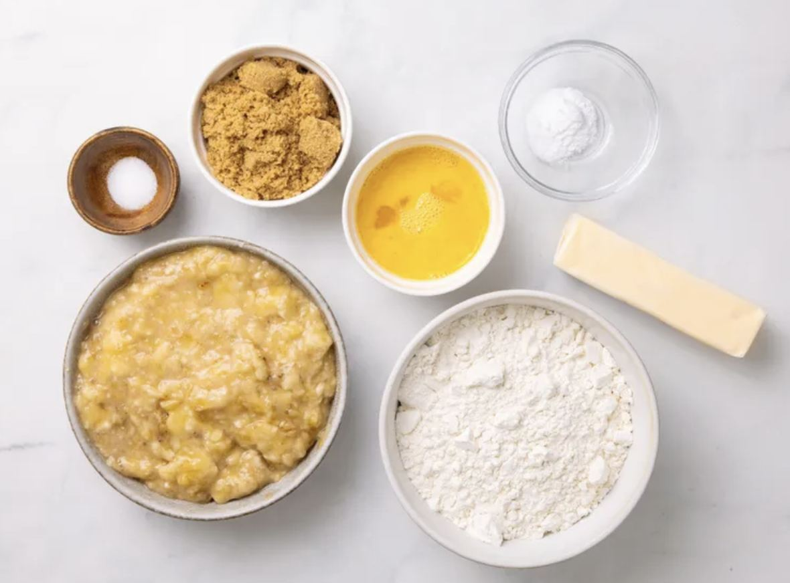
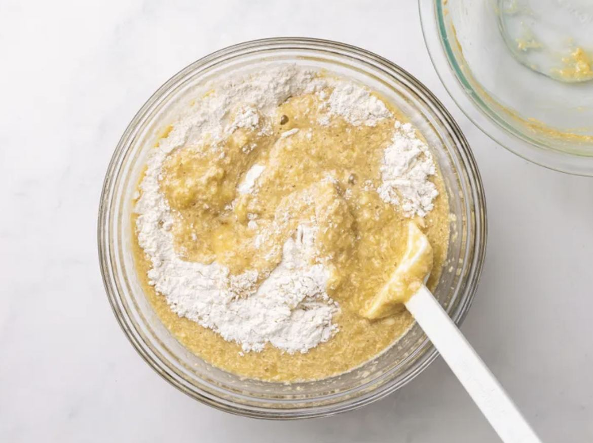
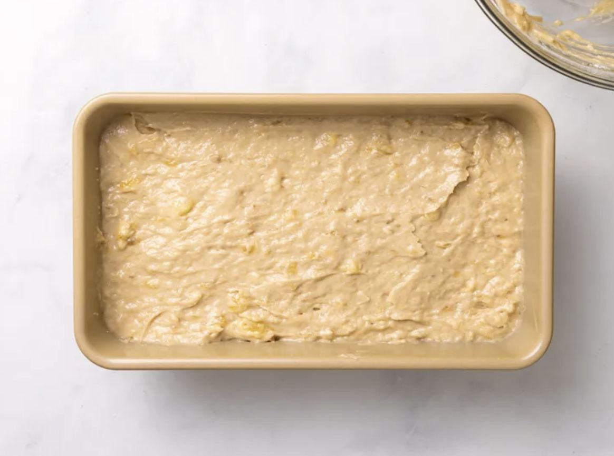
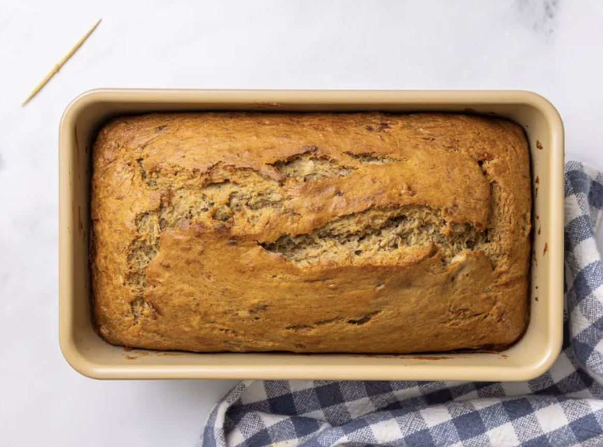
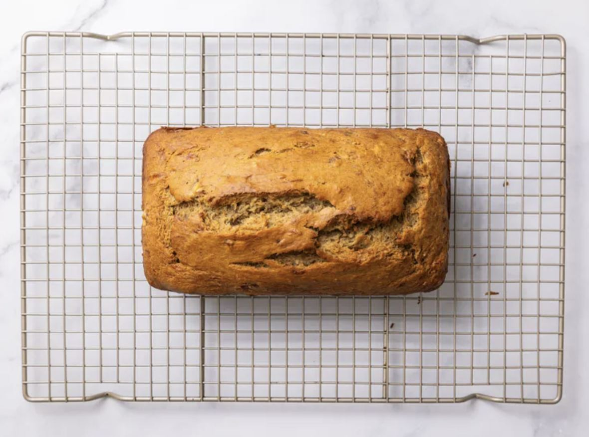

Ingredients
- 2 large overripe bananas
- 2/3 cup brown sugar
- 1/3 cup white sugar
- 1/3 cup coconut oil or vegan butter
- 1 1/2 tsp pure vanilla extract
- 1/4 cup almond milk or pea milk
- 2 cups flour
- 1 1/2 tsp baking soda
- 1/2 tsp salt
Tools: oven, mixing bowl, fork, hand mixer, measuring cups, loaf pan or muffin tin, toothpick, wire rack
Steps
-
Step 1
Preheat
Preheat the oven to 350°F. Grease a loaf pan, or line a muffin tin with paper liners.
-
Step 2
Mash and whip
Mash the bananas with a fork. Add both sugars and whip with a hand mixer until frothy, about 2 to 3 minutes.
-
Step 3
Add the wet ingredients
Add the almond milk, oil, and vanilla. Mix until combined.
-

Step 4
Fold in the dry ingredients
Add the flour, baking soda, and salt. Mix by hand until just combined. Don't over-mix.
-

Step 5
Fill the pan
Pour the batter into the pan and smooth the top. For muffins, fill each cup about 3/4 full.
-

Step 6
Bake
Bake a loaf for 50 to 60 minutes, or muffins for 30 to 40 minutes, until a toothpick comes out clean.
-

Step 7
Cool
Cool in the pan for 10 minutes, then on a wire rack before slicing.
Storage
- Serve warm or at room temperature
- Counter up to 3 days, wrapped
- Freezer up to 3 months